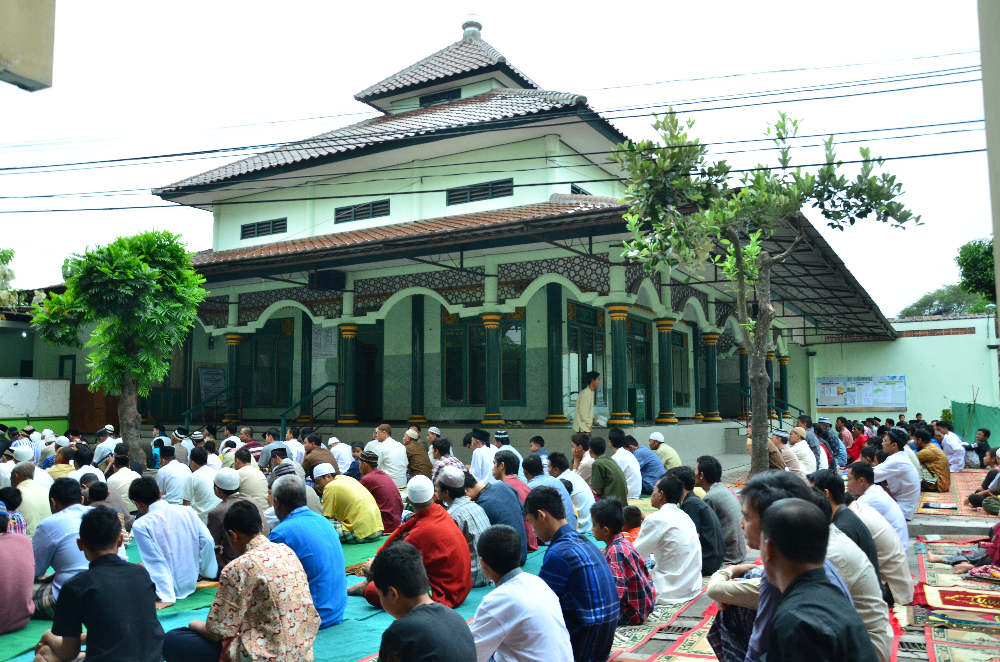
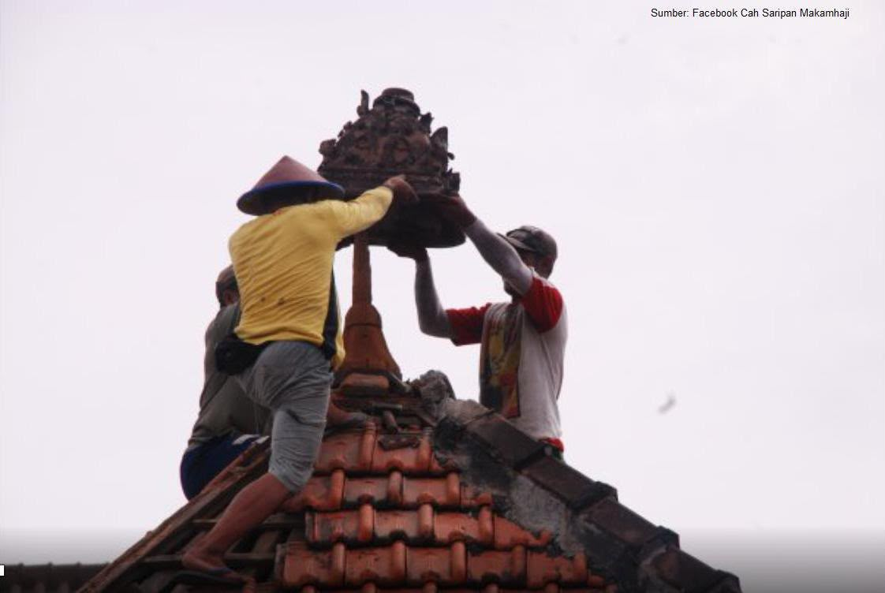

Nguri-uri Warisan,
Ngeluhurake Ibadah.
Nglestarekake sejarah lan tradisi,
minangka warisan kabecikan tumrap generasi.
Nglestarekake sejarah lan tradisi,
minangka warisan kabecikan tumrap generasi.
Masjid Syarif berada di Kampung Saripan, RT 02/RW 12, Makamhaji. Masjid ini dikenal sebagai masjid yang memiliki hubungan dengan Keraton Kasunanan Surakarta dan disebut sebagai salah satu bangunan tertua yang masih bertahan di Kampung Saripan dari segi fungsinya. Dahulu, Masjid Syarif menjadi satu-satunya masjid yang melayani masyarakat di wilayah Kelurahan Makamhaji. Pengelolaannya dipimpin oleh para sesepuh masyarakat yang dahulu dikenal sebagai syarikat masjid, yang sekarang dikenal sebagai takmir masjid.

Masjid Syarif disebut didirikan sekitar tahun 1858. Nama Syarif dikaitkan dengan Kanjeng Pangeran Syarif Husin bin Ibrahim Al-Haddad, seorang tokoh yang dalam narasi disebut sebagai ulama penyebar agama Islam di wilayah Mataram Islam. Makam Eyang Syarif berada di belakang Masjid Syarif. Di lokasi tersebut juga terdapat makam anak-anak beliau yang disebut meneruskan dakwah setelah wafatnya Eyang Syarif.

Setiap sedekah yang Anda titipkan menjadi bagian dari ikhtiar bersama untuk menjaga dan memakmurkan masjid.
7230225685
a.n MASJID JAMI SYARIF
Scan QRIS Sedekah Subuh
Buka aplikasi m-Banking atau E-Wallet (Gopay, OVO, Dana, ShopeePay, LinkAja) Anda lalu scan barcode di samping.
Masjid adalah tempat kita berkumpul, berbagi, dan tumbuh bersama. Mari terus jalin komunikasi dan silaturahmi untuk membangun kebersamaan serta menghadirkan manfaat yang lebih luas bagi umat.